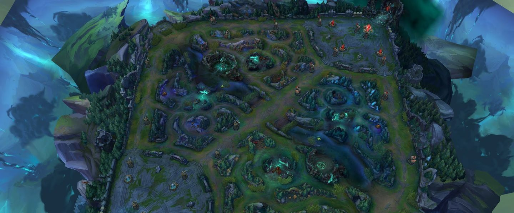
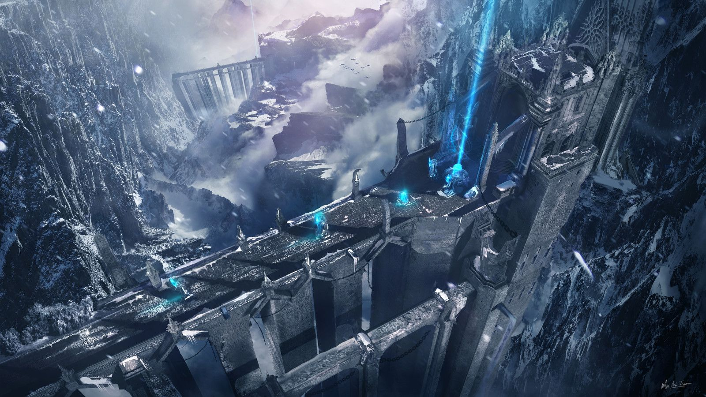

Mapas de League of Legends
Conoce la Grieta del Invocador y otros modos de juego.
Grieta del Invocador

La Grieta del Invocador es el mapa más icónico de League of Legends. Consta de 3 carriles, jungla y objetivos como dragones y Barón Nashor.
Abismo de los Lamentos

El Abismo de los Lamentos es un mapa utilizado en el modo ARAM (All Random All Mid). Es un carril único que fomenta combates rápidos y trabajo en equipo, ideal para partidas rápidas y divertidas.